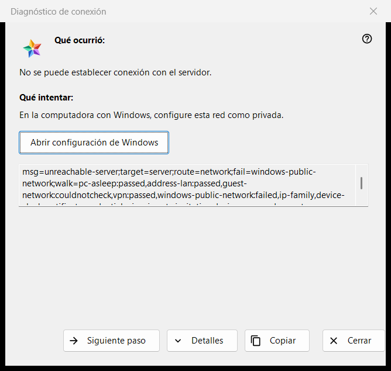
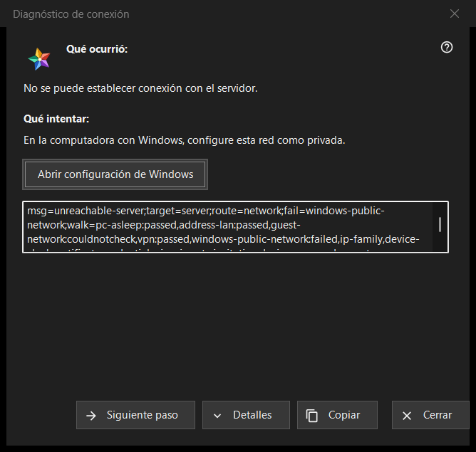

Diagnóstico de conexión
Para qué sirve
Explica por qué no se puede llegar a un servidor o a un dispositivo y ofrece lo que se puede probar, paso a paso. No cambia ningún ajuste del equipo ni de Windows. Se abre desde «¿Por qué no conecta?..» en el menú «Más» de la lista de recursos (para una fila seleccionada), desde una entrada de servidor de «Mis dispositivos» que está volviendo a iniciar sesión, muestra un certificado cambiado o no puede conectar, y por sí sola cuando falla la apertura de un recurso.


En este orden
- Lea «Qué ocurrió:».
- Pruebe lo que dice «Qué intentar:».
- Si esa no es la causa, pulse «Siguiente paso».
- Pulse «Detalles» si alguien pide los códigos, y «Copiar» para entregarlos.
- Cierre la ventana.
Los elementos
Qué ocurrió
Una frase sobre el fallo, por ejemplo «No se puede establecer conexión con el servidor.», «El usuario o la contraseña son incorrectos.» o «Este servidor no coincide con el conectado anteriormente.». Depende del tipo de fallo que abrió la ventana.
Qué intentar
La ventana empieza en el primer paso que falló en la comprobación, o en el primer paso si ninguno falló. Pasos típicos: despertar el dispositivo que ejecuta el servidor, comprobar que ambos dispositivos están en la misma red, salir de una red Wi-Fi de invitados, desactivar un momento una VPN, poner la red de Windows como privada, comprobar el servidor desde otra red, poner bien la fecha y la hora, confirmar una huella digital nueva, volver a escribir el usuario y la contraseña. El último paso dice que solo el administrador del servidor puede solucionarlo.
Siguiente paso y Configuración de Windows
«Siguiente paso» avanza por los pasos y desaparece en el último. Para los dos pasos que la configuración de Windows puede resolver, el perfil de red y el reloj, un botón «Abrir configuración de Windows» abre la página correspondiente de Windows; el programa no cambia nada por sí mismo.
Detalles y Copiar
«Detalles» muestra u oculta un cuadro de solo lectura con los códigos del diagnóstico: el tipo de fallo, el destino, la ruta, el paso fallido y los pasos recorridos. Nunca contiene una dirección, un usuario, una contraseña ni una huella digital. «Copiar» pone esa línea en el portapapeles y la ventana dice «Códigos de diagnóstico copiados al portapapeles.»
Cómo funciona la comprobación
La comprobación se ejecuta solo para la conexión que intentó y únicamente lee: intenta llegar al host y al puerto y examina el estado de la red, los adaptadores VPN, el perfil de red de Windows, la familia de direcciones, el reloj y el certificado. Se detiene en el primer paso fallido, y una comprobación que no se pudo hacer nunca se cuenta como superada ni como fallida.